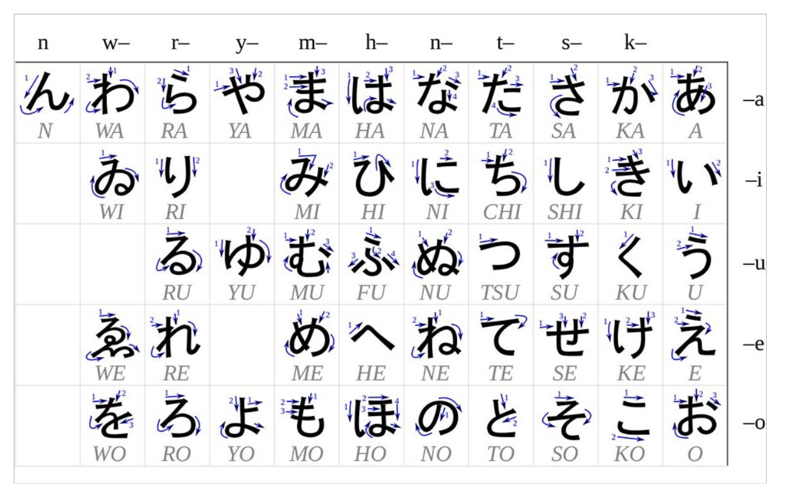

Hiragana strokes
Stroke order chart

Stroke order chart

Kibar fiiller, temel ekler, zamirler.
ikimasu — gitmek
kimasu — gelmek
kakimasu — yazmak
yomimasu — okumak
agemasu — vermek
moraimasu — almak
tsukaimasu — kullanmak
shimasu — yapmak
kyou — bugün
kinou — dün
ashita — yarın
watashi — ben
anata — sen
kare — o (erkek)
kanojo — o (kadın)
-tachi — çoğul, insanlar için
watashitachi = biz
nihon — Japonya
toruko — Türkiye
gakkou — okul
gakusei — öğrenci
pen — kalem
no-to — not defteri
shukudai — ödev
Kibar geniş zaman + gelecek.
Her kişi için aynı çekim.
watashi / anata / kare → hepsi ikimasu
watashi wa gakkou ni ikimasu
ben okula gideceğim
pen wo tsukaimasu
kalemi kullanırım / kullanacağım
Cümlenin ne hakkında olduğunu işaretler.
Sınıfta “am / is / are” gibi düşünülüyor.
anata wa no-to wo moraimasu
sen not defterini alacaksın
watashitachi wa nihon wo moraimasu
biz Japonya’yı alacağız
Fiilin neyi yaptığını işaretler.
Okunuşu o.
pen wo — kalemi
pen wo tsukaimasu
kalemi kullanırım
ashita no-to wo agemasu
yarın defteri vereceğim
Yön, hedef, “kime”.
Daha genel.
watashi wa gakkou ni ikimasu
ben okula gideceğim
anatatachi wa watashi ni shukudai wo agemasu
siz bana ödevi vereceksiniz
gakuseitachi wa kanojotachi ni pen wo agemasu
öğrenciler onlara kalemi verecek
Okunuşu: e
Fiziksel mekana yön.
ni ile aynı cümle kurulabilir, vurgu mekana gider.
watashi wa gakkou he ikimasu
ben okula gideceğim
watashi → watashitachi (biz)
anata → anatatachi (siz)
gakusei → gakuseitachi (öğrenciler)
kanojo → kanojotachi (onlar)
pen wo tsukaimasu
kalemi kullanırım
ashita no-to wo agemasu
yarın defteri vereceğim
anata wa no-to wo moraimasu
sen defteri alacaksın
watashi wa gakkou ni ikimasu
ben okula gideceğim
anatatachi wa watashi ni shukudai wo agemasu
siz bana ödevi vereceksiniz
ja = ca
sh = ş
ch = ç
tsu = tsu
Sınıfta geçti, henüz işlenmedi:
no, kara, made, to
→ lesson 2
desu, işaret sözcükleri, sahiplik, yer/araç, soru, from–to.
kore — bu (this)
sore — o (that, near you)
are — şu (that over there)
kono — bu + noun
sono — o + noun
ano — şu + noun
koko — burası
soko — orası
asoko — şurası
hito — kişi / person
minna — herkes
kare — o (erkek)
kanojo — o (kadın)
gakusei — öğrenci
ohayou (gozaimasu) — günaydın
konnichiwa — merhaba
konbanwa — iyi akşamlar
oyasumi (nasai) — iyi geceler
asa — sabah
hiru — öğlen
ban — akşam
yoru — gece
senshuu — geçen hafta
konshuu — bu hafta
raishuu — gelecek hafta
sakunen — geçen yıl
kotoshi — bu yıl
rainen — gelecek yıl
kako — geçmiş
genzai — şimdi
mirai — gelecek
natsu — yaz
-ji — saat (o’clock)
jikan — saat / zaman
demo — fakat
shikashi — fakat
soshite — and then / sonrasında
-go — dil eki (-ce / -ca)
torukogo — Türkçe
nihongo — Japonca
mise — dükkan
ie — ev
basu — otobüs
kuruma — araba
ii — iyi
yarimasu = shimasu — yapmak
iimasu — söylemek / demek
no — …nin (possession / of)
de — -de / -da, ile (yer veya araç)
to — ile / ve / diye
ka — mi? (soru)
kara — …den (from)
made — …e kadar (until)
Cümleyi kibarlaştırır. “X, Y’dir.”
Pattern:
X wa Y desu
kore wa pen desu
bu kalemdir
kore wa Ahmet desu
bu Ahmet’tir
Tek başlarına dururlar. Yanlarına noun gelmez.
kore — bu (konuşana yakın)
sore — o (dinleyene yakın)
are — şu (ikisine de uzak)
kore wa pen desu
bu kalemdir
sore wa gakusei desu
o öğrencidir
are wa gakusei desu
şu öğrencidir
Sıfata dönünce kullanılır. Yanına noun gelir.
kono — bu + X
sono — o + X
ano — şu + X
kono pen wa ii pen desu
bu kalem iyi kalemdir
kono hito wa Ahmet desu
bu kişi Ahmet’tir
sono gakusei wa ii gakusei desu
o öğrenci iyi öğrencidir
Watch out:
kore wa Ahmet desu — bu Ahmet’tir
kono hito wa Ahmet desu — bu kişi Ahmet’tir
Yer gösterir.
koko — burası
soko — orası
asoko — şurası
koko no mise
buradaki dükkan
soko no mise
oradaki dükkan
asoko no mise
şuradaki mekan
Pattern:
X no Y — X’in Y’si
kore wa watashi no pen desu
bu benim kalemimdir
soko no mise wa kare no mise desu
oradaki dükkan onun dükkanıdır
kinou no yoru
dün gece
kyou no yoru wa watashi no yoru desu
bugünün gecesi benim gecemdir
kyou no yoru wa anata no yoru desu
bugünün gecesi senin gecendir
kanojo wa soko no mise ni ikimasu
o, oradaki dükkana gidecek
no toki — …nin zamanında / when
natsu no toki — yazın
-ji — saat (o’clock)
5ji desu — saat 5’tir
jikan — saat / zaman
jikan wa 5 ji desu
saat 5’tir / the time is five o’clock
İki iş:
1. bulunma: -de / -da
2. araç: ile
ie de — evde
watashi wa ie de pen wo moraimasu
ben evde kalemi alıyorum
anata wa gakkou de nihongo wo tsukaimasu
sen okulda Japonca’yı kullanıyorsun
pen de kakimasu
kalemle yazarım
basu de ikimasu
otobüsle gideceğim
watashi wa kuruma de pen de kakimasu
arabayla, kalemle yazarım
(iki de: araç + alet)
Üç iş:
1. ve / ile (grup)
2. birlikte
3. diye (söz aktarma)
kare to kanojo
o ve o / he and she
kuruma to basu
araba ile otobüs
(sadece grupluyoruz, burada de yok)
kare to kanojo wa basu de ikimasu
o ve o otobüsle gidecek
to issho ni — birlikte
watashi wa kare to issho ni ikimasu
onunla birlikte gideceğim
iimasu — söylemek / demek
“kare wa basu de ikimasu” to iimasu
“o otobüsle gider” diye söyler
Simon to Ilgin to iimasu
Simon ile Ilgin diyecek / adımız Simon ve Ilgin
Cümlenin sonuna eklenir. Soru yapar.
kore wa nan desu ka
bu nedir?
nani wo shimasu ka
ne yapacaksın?
doko ni ikimasu ka
nereye gideceksin?
kare wa gakkou ni ikimasu ka
o okula gidecek mi?
kara — …den (from)
made — …e kadar (until)
Istanbul kara Ankara made 101 km desu
İstanbul’dan Ankara’ya kadar 101 km’dir
Ankara kara kimasu
Ankara’dan geleceğim
5ji made shimasu
saat 5’e kadar yapacağım
asa kara ban made yarimasu
sabahtan akşama kadar yapacağım
Dil adı yapar. Türkçedeki -ce / -ca.
torukogo — Türkçe
nihongo — Japonca
kore wa pen desu
bu kalemdir
kono pen wa ii pen desu
bu kalem iyi kalemdir
kono hito wa Ahmet desu
bu kişi Ahmet’tir
sono gakusei wa ii gakusei desu
o öğrenci iyi öğrencidir
soko no mise wa kare no mise desu
oradaki dükkan onun dükkanıdır
kanojo wa soko no mise ni ikimasu
o, oradaki dükkana gidecek
anata wa gakkou de nihongo wo tsukaimasu
sen okulda Japonca’yı kullanıyorsun
basu de ikimasu
otobüsle gideceğim
watashi wa kare to issho ni ikimasu
onunla birlikte gideceğim
kore wa nan desu ka
bu nedir?
asa kara ban made yarimasu
sabahtan akşama kadar yapacağım
kore tek başına, kono + noun.
kore wa pen desu
kono pen wa ii pen desu
de yer veya araç.
ie de = evde
basu de = otobüsle
to gruplarken de kullanılmaz.
kuruma to basu = araba ile otobüs
yarimasu = shimasu (yapmak)
ga, suki/kirai/hoshii, soru sözcükleri, imasu/arimasu.
suki — sevmek (sıfat)
kirai — nefret etmek (sıfat)
hoshii — istemek (sıfat)
dai suki — çok sevmek
wakarimasu — anlamak (+ ga)
shirimasu — bilmek (+ wo)
olumlu: shitteimasu / olumsuz: shirimasen
manabimasu — öğrenmek (+ wo)
benkyou shimasu — ders çalışmak (+ wo)
kaerimasu — dönmek, eve dönmek (+ ni)
imasu — var olmak (canlı)
arimasu — var olmak (cansız)
moushimasu — …diye söylerler (adımı …dir)
nani — ne
dare — kim
donata — kim (kibar)
itsu — ne zaman
doko — nere
naze — neden
dou — nasıl
dou yatte — ne şekilde (arkasından fiil gelince)
sensei — öğretmen
sushi — suşi
ginkou — banka
hajimemashite — memnun oldum / selamlar (tanışırken)
ga — vurgu; suki / kirai / hoshii / wakarimasu / imasu / arimasu ile
wo — object (shirimasu, manabimasu, benkyou shimasu)
ni — yönelme; imasu/arimasu ile yer
wa’ya benzer, ama özel kullanımları var.
Bu örneklerde ga vurgu verir:
watashi wa sensei desu
= watashi ga sensei desu
kore wa pen desu
= kore ga pen desu
suki, kirai, hoshii sıfattır. wakarimasu anlamaktır.
Hepsi ile ga kullanılır. Türkçe mantığı işlemez: wo / kara yok.
Pattern:
X wa Y ga suki desu
watashi wa sushi ga suki desu
suşi severim
karetachi wa gakkou ga kirai desu
onlar okuldan nefret eder
anata wa nihongo ga wakarimasu ka
sen Japonca’yı anlıyor musun?
anata wa ginkou ga hoshii desu ka
sen banka istiyor musun?
shirimasu — bilmek. Olumlu çoğu zaman shitteimasu, olumsuz shirimasen.
manabimasu — öğrenmek (+ wo)
benkyou shimasu — ders çalışmak (+ wo)
Dönmek. Kendi evin için çoğunlukla bu kelime.
ie ni dou yatte kaerimasu ka
eve nasıl / ne şekilde gideceksin?
nani — ne
dare / donata — kim (donata = kibar)
itsu — ne zaman
doko — nere
naze — neden
dou — nasıl
dou yatte — ne şekilde
Arkasından fiil geliyorsa dou yatte.
ie ni dou yatte kaerimasu ka
eve nasıl gideceksin?
“…diye söylerler bana” = adım …dir.
hajimemashite! Nakamura to moushimasu
selamlar, ismim Nakamura
Olumsuz: -masu → -masen
ikimasu → ikimasen
ni yönelme ekidir (taksim’e, İstanbul’a, bana, sana…).
Ama imasu / arimasu ile yer gösterir: “…de vardır”.
imasu — canlı
arimasu — cansız
Var olan şey ga alır.
pen ga Istanbul ni arimasu
kalem İstanbul’dadır
Istanbul ni pen ga arimasu
İstanbul’da kalem vardır
sensei ga Istanbul ni imasu
öğretmen İstanbul’dadır
watashi wa sushi ga suki desu
suşi severim
karetachi wa gakkou ga kirai desu
onlar okuldan nefret eder
anata wa nihongo ga wakarimasu ka
sen Japonca’yı anlıyor musun?
anata wa ginkou ga hoshii desu ka
sen banka istiyor musun?
ie ni dou yatte kaerimasu ka
eve nasıl gideceksin?
hajimemashite! Nakamura to moushimasu
selamlar, ismim Nakamura
pen ga Istanbul ni arimasu
kalem İstanbul’dadır
sensei ga Istanbul ni imasu
öğretmen İstanbul’dadır
suki / kirai kullanıyorsan ga. Nokta.
Türkçe “suşi(yi)” → wo gibi durur; Japoncada wo değil, ga.
Türkçe “okuldan nefret” → kara gibi durur; Japoncada yine ga.
watashi wa Ilgin no koto ga dai suki desu
ben Ilgin’i çok seviyorum
watashi wa kanojo wo ai shiteimasu
ben ona aşığım
kaerimasu — kendi evine dönüş için çoğunlukla bu kelime.
Fiilden önce “nasıl” → dou yatte, sadece dou değil.
Olumsuz desu (ja / de wa arimasen), alıntı (to iimashita), dou yatte, hai/iie.
kakimasu — yazmak
yomimasu — okumak
iimasu — söylemek / demek
iimashita — söyledi (-masu → -mashita)
hon — kitap
hai — evet
iie — hayır
iya — hayır (daha günlük)
dou yatte — ne şekilde (arkasından fiil gelince)
demo — fakat
shikashi — fakat
wo — object (belirtme)
to — diye (söz aktarma)
wa — topic
Nasıl / ne şekilde. Arkasından fiil gelir.
Pattern:
… wo dou yatte VERB ka
sore wo dou yatte kakimasu ka
onu nasıl yazacaksın
anata wa sore wo dou yatte kakimasu ka
sen onu nasıl yazacaksın
Kibar geçmiş: -masu → -mashita
iimasu → iimashita
söyler → söyledi
Söz aktarma. Alıntının ardından to iimashita.
Soru: to iimashita ka
Pattern:
X wa “…” to iimashita
kare wa “anata wa sore wo dou yatte yomimasu ka” to iimashita
o, onu nasıl okursun diye söyledi
kanojo wa “anata wa sore wo dou yatte yomimasu ka” to iimashita ka
o, “sen onu nasıl okuyacaksın” diye söyledi mi?
Bu …dir.
Pattern:
kore wa … desu
kare wa gakusei desu
o (erkek) öğrencidir
ja = de wa
Olumlu: X wa Y desu
Olumsuz: X wa Y de wa arimasen
daha kısa: X wa Y ja arimasen
Aynı anlamda konuşma biçimleri:
ja nai desu / de wa nai desu
Pattern:
X wa Y de wa arimasen
kare wa gakusei desu demo sensei de wa arimasen
o öğrencidir ama öğretmen değildir
kore wa gakusei desu demo sensei ja nai desu
bu öğrencidir ama öğretmen değildir
kore wa gakusei desu demo sensei de wa nai desu
bu öğrencidir ama öğretmen değildir
kore wa hon desu shikashi kuruma de wa arimasen
bu kitaptır ama araba değildir
İkisi de “ama / fakat”.
İki cümleyi karşılaştırır: A desu, ama B değildir.
hai — evet
iie — hayır
iya — hayır (daha günlük)
sore wo dou yatte kakimasu ka
onu nasıl yazacaksın
anata wa sore wo dou yatte kakimasu ka
sen onu nasıl yazacaksın
kare wa “anata wa sore wo dou yatte yomimasu ka” to iimashita
o, onu nasıl okursun diye söyledi
kanojo wa “anata wa sore wo dou yatte yomimasu ka” to iimashita ka
o, “sen onu nasıl okuyacaksın” diye söyledi mi?
kare wa gakusei desu
o (erkek) öğrencidir
kare wa gakusei desu demo sensei de wa arimasen
o öğrencidir ama öğretmen değildir
kore wa hon desu shikashi kuruma de wa arimasen
bu kitaptır ama araba değildir
iie, kono sensei wa sensei de wa arimasen
hayır, bu öğretmen öğretmen değildir
ja = de wa. İkisi de aynı kapı: “değildir” yapısının kısa / uzun hali.
Değildir, üç (aslında dört) yol:
de wa arimasen — daha resmi kibar
ja arimasen — kısa kibar
de wa nai desu / ja nai desu — konuşma kibar
Sınıf şakası:
iie, kono sensei wa sensei de wa arimasen
hassiktir, bu öğretmen öğretmen değildir
ga ile kullanılan kelimeler, “…biliyor musun?”, naze nara, otsukaresama.
wakarimasu — anlamak (+ ga)
wakarimasen — anlamamak
shirimasu — bilmek (+ wo)
olumlu: shitteimasu / olumsuz: shirimasen
kimashita — geldi (kimasu → kimashita)
suki — sevmek (sıfat)
kirai — nefret etmek (sıfat)
hoshii — istemek (sıfat)
ii ne — iyi ya / beğenmek (internet)
ryuugakusei — uluslararası öğrenci
torukojin — Türk (kişi)
tokyo — Tokyo
istanbul — İstanbul
hon — kitap
pakuchi — kişniş
tabemono — yemek
otsukaresama — kolay gelsin
nanji — saat kaç
naze — neden
doko — nere
dare — kim
itsu kara — ne zamandan beri
eigo — İngilizce
nihongo — Japonca
torukogo — Türkçe
naze nara — çünkü (naze’nin cevabı)
ga — suki / kirai / hoshii / wakarimasu ile
no koto — kişi + suki (X no koto ga suki)
to — ile / ve
de — ile (araç) / -de (yer)
kara — …den (from / since)
Şimdilik öğrendiklerimiz. Hepsi ile ga:
suki — sevmek (sıfat)
kirai — nefret etmek (sıfat)
hoshii — istemek (sıfat)
wakarimasu — anlamak
Pattern:
X wa Y ga suki / kirai / hoshii desu
X wa Y ga wakarimasu
Önce soru cümlesi, sonra shitteimasu ka.
Pattern:
[soru] ka shitteimasu ka
sensei to gakusei wa doko ni ikimasu ka shitteimasu ka
hoca ile öğrenci nereye gidecek, biliyor musun?
naze gakkou de hon wo yomimasu ka shitteimasu ka
neden okulda kitap okuyor, biliyor musun?
anata wa nanji ni kare wa tokyo kara istanbul ni kimasu ka shitteimasu ka
saat kaçta Tokyo’dan İstanbul’a gelecek, biliyor musun?
anata wa dare wa kuruma de naze roku-ji ni kimashita ka shitteimasu ka
kim arabayla neden saat 6’da geldi, biliyor musun?
watashi wa sushi ga suki desu
suşi severim
anata wa hon ga suki desu
kitap seversin
naze Yasir Sensei wa nihongo ga suki desu ka
neden Yasir hoca Japonca sever?
Kişi sevince no koto:
Simon wa itsu kara Ilgin no koto ga suki desu ka
Simon ne zamandan beri Ilgin’i seviyor?
naze’nin cevabı. “Çünkü…” diye başlar.
watashi wa gakkou ga kirai desu
okuldan nefret ederim
watashitachi wa ryuugakusei ga kirai desu
uluslararası öğrenciden nefret ediyoruz
naze Ilgin wa pakuchi ga kirai desu ka
neden Ilgin kişnişten nefret eder?
torukojin wa itsu kara asa ga kirai desu ka
Türkler ne zamandan beri sabahtan nefret eder?
watashi wa no-to ga hoshii desu
not defteri isterim
naze karetachi wa kuruma to basu ga hoshii desu ka
neden onlar araba ve otobüs isterler?
itsu anatatachi wa sushi ga hoshii desu ka
ne zaman siz suşi istersiniz?
naze anatatachi wa tabemono ga hoshii desu ka
niçin (şu an) yemek istersiniz?
Olumsuz: wakarimasu → wakarimasen
Nesne yine ga.
watashi wa nihongo ga wakarimasen
ben Japonca anlamıyorum
watashi wa eigo ga wakarimasen
ben İngilizce anlamıyorum
anata wa naze nihongo ga wakarimasen ka
sen neden Japonca anlamazsın?
kanojo wa sono torukogo ga wakarimasen
o, o Türkçeyi anlamaz
sensei to gakusei wa doko ni ikimasu ka shitteimasu ka
hoca ile öğrenci nereye gidecek, biliyor musun?
naze gakkou de hon wo yomimasu ka shitteimasu ka
neden okulda kitap okuyor, biliyor musun?
anata wa nanji ni kare wa tokyo kara istanbul ni kimasu ka shitteimasu ka
saat kaçta Tokyo’dan İstanbul’a gelecek, biliyor musun?
anata wa dare wa kuruma de naze roku-ji ni kimashita ka shitteimasu ka
kim arabayla neden saat 6’da geldi, biliyor musun?
watashi wa sushi ga suki desu
suşi severim
Simon wa itsu kara Ilgin no koto ga suki desu ka
Simon ne zamandan beri Ilgin’i seviyor?
watashi wa gakkou ga kirai desu
okuldan nefret ederim
watashi wa no-to ga hoshii desu
not defteri isterim
watashi wa nihongo ga wakarimasen
ben Japonca anlamıyorum
watashi wa eigo ga wakarimasen
ben İngilizce anlamıyorum
otsukaresama — kolay gelsin
Ga-kelimeler (ga ile kullanılanlar): suki, kirai, hoshii, wakarimasu.
Birini seviyorsan X no koto ga suki.
naze nara = naze’nin cevabı (çünkü).
ii ne — Instagram’daki beğenmek gibi. “İyiymiş ya / iyi ya.” İnternet dili.
Konum sözcükleri (ue/shita/…), ni ile yer, imasu/arimasu ve olumsuzları.
demasu — çıkmak
hairimasu — girmek
imasu — bulunmak (canlı)
imasen — bulunmamak (canlı)
arimasu — bulunmak (cansız)
arimasen — bulunmamak (cansız)
ima — şimdi
mosuku — cami
Osaka — Osaka
ue — üst
shita — alt
migi — sağ
hidari — sol
naka — iç
soto — dış
mae — ön
ushiro — arka
tsukue — masa
ni — yönelme; zaman için bulunma; imasu/arimasu ile yer
no — …nin (X no ue — X’in üstü)
Üç iş:
1. yönelme eki (okula, İstanbul’a)
2. zaman için bulunma eki
3. özel kalıp: imasu / arimasu ile yer
imasu — canlılar için bulunmak
arimasu — cansızlar için bulunmak
Var / bulunan şey wa (topic). Yer ni.
Pattern:
X wa PLACE ni imasu / arimasu
sensei wa doko desu ka
hoca nerede?
sensei wa doko ni imasu ka
hoca nerede (bulunuyor)?
sensei wa mosuku ni imasu
hoca camide (bulunuyor)
gakusei wa gakkou ni imasu
öğrenci okulda
watashi wa ima kuruma ni imasu
ben şimdi arabadayım
Olumsuz: imasu → imasen, arimasu → arimasen.
watashi wa ima kuruma ni imasen
ben şimdi arabada değilim
kuruma wa ima Osaka ni arimasen
araba şu an Osaka’da değil
Konum: Y no POSITION ni — Y’nin üstünde / altında / içinde…
Pattern:
X wa Y no ue ni arimasu
pen wa tsukue no ue ni arimasu
kalem masanın üstünde
no-to wa tsukue no shita ni arimasu
not defteri masanın altında
hon wa gakkou no naka ni arimasu
kitap okulun içinde
basu wa doko ni arimasu ka
otobüs nerede?
demasu — çıkmak
hairimasu — girmek
Derste geçti; örnek cümle yazılmadı.
sensei wa doko desu ka
hoca nerede?
sensei wa doko ni imasu ka
hoca nerede (bulunuyor)?
sensei wa mosuku ni imasu
hoca camide (bulunuyor)
gakusei wa gakkou ni imasu
öğrenci okulda
watashi wa ima kuruma ni imasu
ben şimdi arabadayım
watashi wa ima kuruma ni imasen
ben şimdi arabada değilim
pen wa tsukue no ue ni arimasu
kalem masanın üstünde
no-to wa tsukue no shita ni arimasu
not defteri masanın altında
hon wa gakkou no naka ni arimasu
kitap okulun içinde
kuruma wa ima Osaka ni arimasen
araba şu an Osaka’da değil
basu wa doko ni arimasu ka
otobüs nerede?
Notta “dis: soko” yazıyordu. Dış = soto. soko = orası (L2).
doko desu ka ve doko ni imasu ka ikisi de “nerede”. İkincisi bulunma fiiliyle.
Eylem yeri de (okulda yazmak). imasu / arimasu ile yer ni (okulda bulunmak).
demasu / hairimasu geçti, örnek yok.
...için (no tame ni), olduğu için (desu kara / kara), önce/sonra, sınıf kelimeleri.
oshiemasu — öğretmek
keshimasu — silmek
kikimasu — dinlemek / soru sormak
shitsumon shimasu — soru sormak
kotae shimasu — cevap vermek
tsukurimasu — yapmak (make; yemek, inşa)
demasu — çıkmak
hairimasu — girmek
isogashii — meşgul
jibun — kendi
Ramazan — Ramazan
kyoushitsu — sınıf
jinja — tapınak
enpitsu — kurşun kalem
keshigomu — silgi
kotoba — kelime
imi — mana
shitsumon — soru
kotae — cevap
meishi — isim / noun
ryouri — yemek (pişirilen)
rei — örnek
nani mo — hiçbir şey (nanimo)
…no mae ni — …dan önce (zaman)
…no ato de — …dan sonra / …nın sonrası
…no tame ni — …için
…ni tsuite — …nın hakkında / …ile ilgili
desu kara — olduğu için / …den dolayı (isimden sonra)
kara — fiilden sonra: için / olduğu için
…no mae ni — …dan önce (zaman)
…no ato de — …dan sonra / …nın sonrası
Konumdaki mae (ön) / ushiro (arka) ayrı. Burada zaman.
…nın hakkında / …ile ilgili.
Pattern:
X ni tsuite
Sono kotoba no imi ni tsuite nani mo shirimasen
o kelimenin manası hakkında hiçbir şey (nanimo) bilmiyorum
nani mo (nanimo) — hiçbir şey.
kara burada “…den” (from). Önünden girmek, arkasından çıkmak.
Kyoushitsu no mae kara kyoushitsu ni hairimasu, soshite kyoushitsu no ushiro kara demasu
sınıfın önünden sınıfa gireceğim sonra sınıfın arkasından çıkacağım
isim + no tame ni — …için (birinin / bir şeyin uğruna).
Pattern:
X no tame ni VERB
Jibun no tame ni nihongo wo benkyou shimasu
kendim için japonca çalışıyorum
Arda no tame ni no-to ni kakimasu
Arda için not defterine yazıyorum
Ilgin no tame ni sushi wo tsukurimashita
Ilgin için sushi yaptım
Arda no tame ni ryouri wo tsukurimashita
Arda için yemek yaptım
Sensei no tame ni no-to kara keshimashita
hoca için not defterinden sildim
Sensei wa gakuseitachi no tame ni jinja wo tsukurimashita
hoca öğrenci için tapınak yaptı
Sensei wa gakuseitachi no tame ni kono kotoba ni tsuite rei wo agemashita
öğretmen öğrenciler için bu kelime ile ilgili örnek verdi
için / olduğu için / …den dolayı.
İsimden sonra: desu kara (olduğu için)
Fiilden sonra: kara (için)
Pattern:
NOUN desu kara VERB
VERB kara VERB
Gakkou ni ikimashita kara nihongo wo manabimashita
okula gittiğim için japonca öğrendim
kore wa pen desu kara kakimasu
bu kalem olduğu için yazarım
no-to ni kakimasu kara isogashii desu
deftere yazacağım için meşgulüm
Ramazan desu kara tabemono tabemasen
Ramazan olduğu için yemek yemem
Tabemasen kara nihongo wo benkyou shimasen
yemeyeceğim için japoncayı çalışmayacağım
yapmak (make). Yemek yapmak, bir şey inşa etmek. İngilizce make’e yakın. shimasu / yarimasu değil.
Sono kotoba no imi ni tsuite nani mo shirimasen
o kelimenin manası hakkında hiçbir şey (nanimo) bilmiyorum
Kyoushitsu no mae kara kyoushitsu ni hairimasu, soshite kyoushitsu no ushiro kara demasu
sınıfın önünden sınıfa gireceğim sonra sınıfın arkasından çıkacağım
Jibun no tame ni nihongo wo benkyou shimasu
kendim için japonca çalışıyorum
Arda no tame ni no-to ni kakimasu
Arda için not defterine yazıyorum
Gakkou ni ikimashita kara nihongo wo manabimashita
okula gittiğim için japonca öğrendim
kore wa pen desu kara kakimasu
bu kalem olduğu için yazarım
no-to ni kakimasu kara isogashii desu
deftere yazacağım için meşgulüm
Ramazan desu kara tabemono tabemasen
Ramazan olduğu için yemek yemem
Tabemasen kara nihongo wo benkyou shimasen
yemeyeceğim için japoncayı çalışmayacağım
Ilgin no tame ni sushi wo tsukurimashita
Ilgin için sushi yaptım
Arda no tame ni ryouri wo tsukurimashita
Arda için yemek yaptım
Sensei no tame ni no-to kara keshimashita
hoca için not defterinden sildim
Sensei wa gakuseitachi no tame ni jinja wo tsukurimashita
hoca öğrenci için tapınak yaptı
Sensei wa gakuseitachi no tame ni kono kotoba ni tsuite rei wo agemashita
öğretmen öğrenciler için bu kelime ile ilgili örnek verdi
Hatırla: manabimasu / benkyou shimasu / kakimasu / yomimasu / gakkou / gakusei / sensei.
mae konumda “ön”; …no mae ni zamanda “…dan önce”.
İsim + desu kara. Fiil + kara.
tsukurimasu = make. shimasu değil.
keshimasu — silmek; keshigomu — silgi.
rei wo agemasu — örnek vermek (agemasu = vermek).
i-sıfat / na-sıfat, chotto/sukoshi, dore/dono, geçmiş olumsuz (-masendeshita).
chigaimasu — farklı olmak, yanlış olmak, hayır (no)
ikimasendeshita — gitmedi (-masen + deshita)
atarashii — yeni (i)
oishii — lezzetli (i)
utsukushii — güzel (i)
warui — kötü (i)
kirei — güzel (na; utsukushii’ye yakın)
shizuka — sessiz (na)
hansamu — yakışıklı / handsome (na)
dame — olmaz, işe yaramaz (na)
chotto — biraz
sukoshi — biraz
otoko (no hito) — adam
onna (no hito) — kadın
dore — hangisi (arkasından isim gelmez: dore desu ka)
dono — hangi + isim (dono pen = hangi kalem)
İki i ile bitiyorsa %99 i-sıfatıdır.
Olumlu: sıfatı olduğu gibi getir.
Olumsuz: son i’yi sil, yerine -kunai getir.
Pattern:
utsukushii → utsukushikunai
warui → warukunai
sukoshi utsukushii hito
biraz güzel kişi
chotto utsukushikunai hito
biraz güzel olmayan kişi
chotto warui hon
biraz kötü kitap
warukunai hon
kötü olmayan kitap
kono hito wa warukunai desu
bu kişi kötü değildir
i ile bitmiyorsa %100 na-sıfatıdır; kalanı ezber.
Olumlu, isimden önce: -na
Olumsuz, isimden önce: ja nai / dewa nai (olumsuzda na yok)
Sonrasında isim yoksa: ja arimasen / ja nai desu / dewa nai
Pattern:
kirei na hito
kirei ja nai hito
X wa kirei ja arimasen
sukoshi kirei na hito
biraz güzel kişi
sukoshi kirei ja nai hito
biraz güzel olmayan kişi (= kirei dewa nai hito)
kono hito wa kirei ja arimasen
bu kişi güzel değildir (ja nai desu)
dame na otoko
işe yaramaz erkek
dame ja nai otoko
işe yaramaz olmayan erkek
kono otoko wa dame ja arimasen
bu erkek işe yaramaz değildir (ja nai desu)
dore — hangisi. Arkasından isim gelmez.
dono — hangi. Arkasından isim gelir.
dore desu ka
hangisi?
dono pen
hangi kalem
Olumsuz geniş zamanı al, deshita ekle.
ikimasu — gidecek
ikimasen — gitmeyecek
ikimashita — gitti
ikimasendeshita — gitmedi
Aynı kalıp: shimasendeshita / kakimasendeshita / kikimasendeshita / yarimasendeshita
farklı olmak, yanlış olmak, hayır (no).
otoko to onna wa chigaimasu
erkek ile kadın farklıdır
sukoshi utsukushii hito
biraz güzel kişi
chotto utsukushikunai hito
biraz güzel olmayan kişi
chotto warui hon
biraz kötü kitap
warukunai hon
kötü olmayan kitap
kono hito wa warukunai desu
bu kişi kötü değildir
sukoshi kirei na hito
biraz güzel kişi
sukoshi kirei ja nai hito
biraz güzel olmayan kişi
kono hito wa kirei ja arimasen
bu kişi güzel değildir
dame na otoko
işe yaramaz erkek
dame ja nai otoko
işe yaramaz olmayan erkek
kono otoko wa dame ja arimasen
bu erkek işe yaramaz değildir
dore desu ka
hangisi?
otoko to onna wa chigaimasu
erkek ile kadın farklıdır
Notta “Ders 6 kelimeleri” yazıyordu; bu #8.
İki i ile biten → i-sıfat (-kunai). i ile bitmeyen → na-sıfat (-na / ja nai).
utsukushii ve kirei ikisi de “güzel”; kirei na-sıfat.
dore tek başına, dono + isim. (kore / kono gibi.)
Geçmiş olumsuz = -masen + deshita.
İstediğini işaretle. Hepsi veya tek tek.